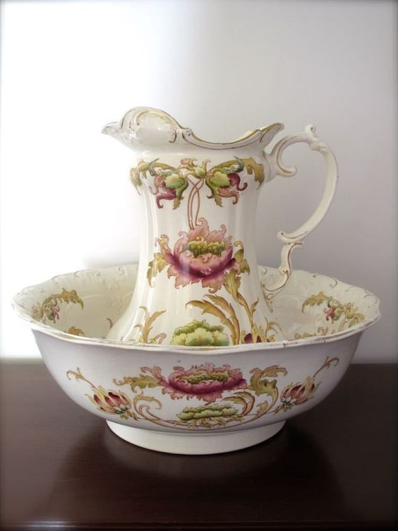
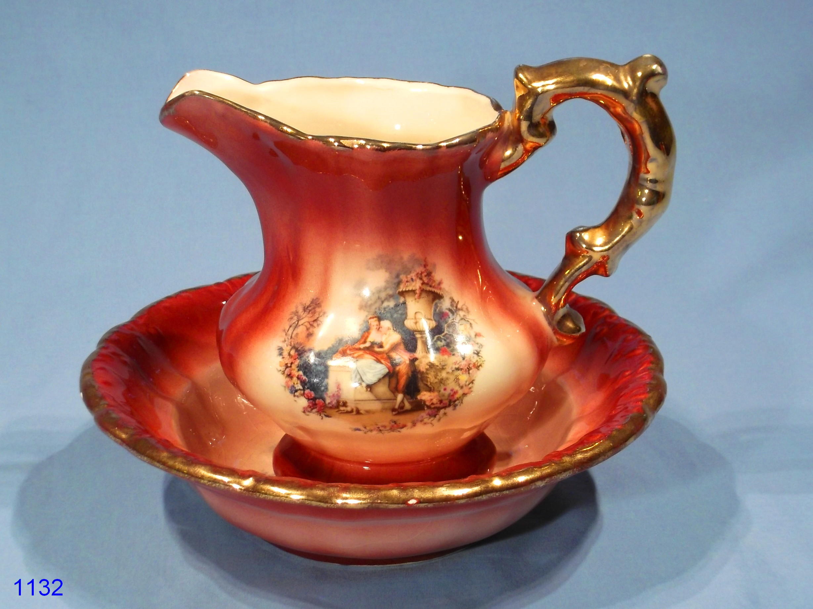

Though I've been interested in the Victorian Era and world history in general for a long while, it wasn't until I read about two women's experiences of living as a Victorian that I began to think about the Victorian times as an invaluable learning resource for my design practice.
The two books that had an profound impact on me are This Victorian Life by Sarah A. Chrisman, and How To Be A Victorian by Ruth Goodman. Both historians have engaged in experiential study of the Victorian era, following the technologies and cultural norms of the day.
In the sixth chapter of Chrisman's book, she describes the purchase of an antique toilette set, or, a wash set. This consisted of a large pitcher and a matching bowl, used to carry hot water for the stand-up wash, a routine morning wash that, as described, takes place standing up.
 Antique wash sets.
Chrisman began doing daily stand-up washes long before obtaining an antique wash set, and only when she did, did she discover elements of the old design that changed the experience of using the wash set:
"The pitcher of the wash set proved to hold one of the wonderful subtle lessons that can only be learned by using an authentic antique instead of a reproduction. At the top of the handle are two little curls in the china pottery. I barely noticed them at first, and even if I had, my only thought would have been that they were a pretty bit of ornamentation. However, after I had been using my wash set a few days, I noticed that the pitcher's weight was designed for perfect balance. I realized that when i carried it upstairs full of water, my thumb automatically braced itself against the larger of the two curls on the handle to steady it. When I poured out my morning toilette, my fingers naturally wrapped around the curls of their own accord. The design was so simple and so perfect that I didn't even have to think about it." - This Victorian Life, Chapter 6.
It may help understanding of how Chrisman discovered this to understand how this set might be used. Ruth Goodman explains the process in her book: Using a bowl, a bucket, a cloth, some soap, and a jugful of water, people would give themselves a wipedown- but while this could be accomplished in modern times with modern soap using just cold water, Victorian soap would not lather in cold water, and had to be used with hot water. This meant that water had to be taken from the hot water storage in the kitchen range, which was often downstairs from the bedroom.
Carrying a large jug of hot water up one, two, or even three flights of stairs is a difficult task. Chrisman's experience of using the antique wash set for its intended purpose helped her discover features of it that actually made the task easier.
My Takeaway
Having explored user experience design earlier in this semester, I found it interesting that the nuances in the pitcher's design became evident to Chrisman through her use of it. Because the wash set was used for its specific purpose (ie. use as a water receptacle) and at the frequency it is intended to be used at, the user could appreciate the details of the design that ease its usage.